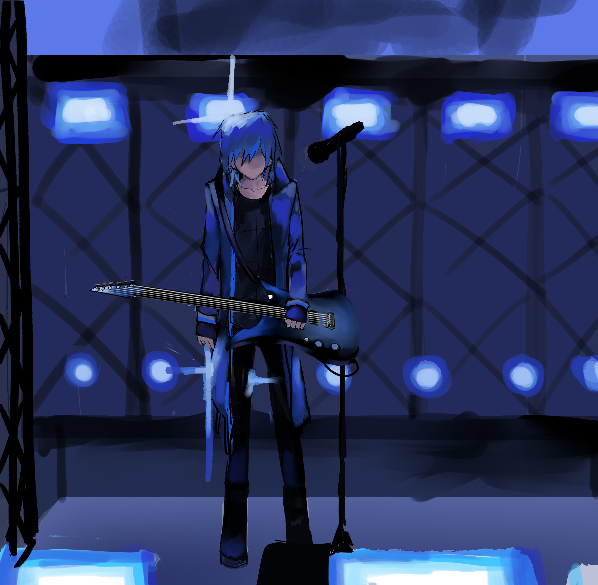

看啊，Azure….
经过漫长的征程，我们终于登上高高的塔。
我们的楼群拔地而起，我们脚下的人群像尘埃。
我们的机器可以将心灵抽象成一根根细线。
我们从中窥见所有预期与回报的差额，和从中诞生的幸福与不幸。
不，不。
它从更远、更远的地方便存在。
告诉我、告诉我，它因什么而升，又因什么而落？
第一个波谷之后，画家离开了神殿。
第二个波谷之后，诗人走出了皇宫。
第三个波谷之后，音乐家走上了街头。
一直以来以先锋自居的我们，恐怕连情感诞生因果都弄反了吧？
我们本不必为一切担心和气恼。
周期总会回归，世界永远会得救，只是有抓住机遇的人，也有相应被牺牲掉的人罢了。
“所以啊。”
“最终我们什么也没能改变。”
一
“如果可以的话，大家不需要花费额外的钱证明对我们的爱，也不需要给我们起太夸张的昵称了。大家只要能够享受音乐，我们就已经非常满足了。“
生平第一次，Azure在演唱会上对观众说起了苛责似的话。
空虚的生命迫切地需要一个能让人热爱并且为之战斗的东西。于是即使是在忘记了神明的土地上，巡逻的护卫队也逐渐被建设起来。直至衣服上贴着“霓虹星球“布标的粉丝们公然将异己者撞到在地，Azure认为自己有必要站出来遏止这一切；有些人可以做到心安理得地享受崇拜，将善与恶尽数纳入英雄麾下，对于但是对他来说恐怕绝对不行。
人群中蔓延起厚重的底噪，我们在沉郁中行进，夹道的标牌和横幅像游行。风势正饱满，彩带和花瓣挤满天空，溢出的部分落到我们不知道该挂起勋章还是诉状的身上。人群中有人在奋力挥手。有的则开始不安地窃语。
“咦咦？！Azure先生，不喜欢粉丝们了吗……?“
我们无心回答，只顾不断推开挡路的障碍，沉默地走着。
“今年是向世界发起冲击的一年！”
几天前，所有忙碌的艺人终于腾出了共同的时间，以倾听虹影集团发表他们最宏伟的计划。豪情万丈的声波从头顶呼呼掠过，这时我才意识到，那股激情既早已抛下过往，也未着眼到现在的我们身上。远远地、远远地，它已经投向未来的无数种种，径直伸向那触手可及的彼岸，那里属于建立产业，娱乐世界、音乐帝国，以及那个年代一切膨胀的梦想。
可是，和辉煌盛景一同浮现在眼前的、沾满鲜血的银河列车，却始终在脑内挥之不去。
“我们的电台试播取得了辉煌的成功……海的彼岸有大批听众……光辉国的学者先发明音律，然而却在自己的教条里面束缚百年……我们的理念一定会重塑他们的世界……！”
“大家的冲劲都值得赞叹……勇气是这个时代最值得颂扬的美德……尤其是‘霓虹星球’，正是大家的榜样……”
“哦耶！”于是大家就这样愉快地为即将到来的新纪元欢呼起来，灿烂的光芒沿着外墙上的灯带倾泻而下，荧幕上的烟筒喷射出礼花。混凝土在黑暗中隐去，阶梯状的楼层一直通向天堂。
“站在什么样的位置，就得做什么样的事情。”晚上的私人会议上，我们收到了这样的告知。
“要走出国门，格局一定要大气一些……得看看自己现在的身份呀！这些曲子，还有这些，里面夹杂的个人情绪太多了。这可不像‘霓虹星球’该有的样子。”
“我们的团队致力于发扬‘团结大家庭‘的精神、讲究一个’互帮互助‘。作为新人的榜样，稍微支援一下后辈们吧！对于不合时宜的风格呢，就把它交给合适的人。相应地，我们召集了全国最好的音乐制作人，他们可以帮助制作与你们相称的曲目……”
我们晕头晕脑地听着，然后才理解起来，所谓的互助计划是想让团队间相互转让自己的作品。或许在工业界这是再不过寻常的生产流程，但是于我们眼中实在是过于缪谈。音乐不是产品，不是设定好程序就能在流水线上扑通扑通地冒出来，灵感这种东西更是近乎于一次性用品，就是这是任何一个作曲家都再清楚不过的事实。
“到了最后，连作者和作品之间都要被分割开吗？“Azure问道。
“我从来没有和其他人交换作品的想法，也没有去吞并他人心血的念头。”
“Azure先生……”
“我不能离开我的音乐。唯有这点我不能让步。“
于是，那天的会谈最终也不欢而散。
再怎么急切也不能公然说出这样的话呀，我们都明白这一点，包括Azure本人。抱歉，“Azure说，“抱歉。”，我们却不知到该作何应答。
“我要退出‘霓虹星球’。”终于，在第二天夜里，lime终于打碎了这片说不清道不明的不安。
他说话一贯唐突; 但这次好像又在预料之中。可是我依然拦住他，请求他能否有一次彻底把话说明白。后来，不知怎么地，我们竟然开始激烈地争吵起来。
“你们不觉得这越来越荒唐了吗？除非我们承认自己身处一个叫“霓虹星球”的剧组，然后我们四个人不得不一直继续表演下去，就像那可怜的《银河远征军》一样，历史上还没有电影这么不要脸地一直拍着续作，哪怕是在原作者离开之后；我看他们手上没有十二部曲是不会罢休的吧？”
“所有的人们只是想要去造一个他们想象中的漂亮花园、只是想让一切‘看起来像那么回事’罢了，剩余的一切不过是可以随意搬动的砖；《音乐世界》的头版上必须放上一个占位符，现在它的名字刚好叫‘霓虹星球’。你听清他们是怎么说的了吗？‘没有霓虹星球该有的样子’？！我们的想法是什么样、我们作品的质量如何根本无所谓了；我们已被自己的副本可悲地替换掉，早已束手束脚、再不能谋求任何发展；哦，得了，在彻底成为一滩烂泥之前，不如干脆地把它切断吧。”
“你说的我明白啊！但是我们非得放弃‘霓虹星球’？我们为什么要因为别人的错误就放弃证明自己？我们的情感、我们的热爱难道也是虚假的吗？”我喊叫道。我想过仇恨公司、仇恨观众，仇恨我们的皮囊，仇恨这座通过无尽的娱乐才能运转的城市，是我万分不能理解他为何必须极端到彻底消灭这一存在来寻求解脱。
“哦……！说到所谓情感的事情，更加可气了！我当初对乐队这种形式感兴趣，正是因为在其中可以不用遵守成规，不断地摸索创造，可是现在呢，所有的这些家伙只会整天把叛逆反抗愤怒之类的词语挂在嘴边，除了不停相互谩骂，炫耀自己的品味以外还会做什么？连粉丝谈论起他们景仰的对象，也不过是所谓‘外貌品格‘、所谓‘精神理念‘……从头到尾，哪怕一个人去关注音乐本身呢？“
紧接着，lime想到更不愉快的事情，开始咬牙切齿起来。
“甚至合成器的音色一多，还会被那些人骂‘不伦不类’，你们到底又懂些什么……！如果键盘手注定要被压一头，那么我对此的兴致就到此为止了。再见。”
明明和他的心情是相近的，但我们却以大吵一架收场。最后Lime头也不回地离开了，而我用完了所有的力气，蹲在地上；出人意料地，Azure却几乎完全没有参与这场关于音乐性的争论。Flint给我们倒了饮料，我们依旧陷入可怕的沉默。
可是源源不断的工作邮件，仍然不停叮咚叮咚从电脑里喷射出来。“这星期的安排……下星期的安排……下下个星期……注意查收。请尽快准备......” 不容打断也不容质疑地，它们从来都是如此笃定地陈述着。仿佛默认所有的事物都理所应当按部就班地运行、从不会卡壳也不会有差错一般。
良久，Azure叹了口气，缓缓起身。
“团队因为理念不合而分开，再正常不过了。”他这么说着，可是我分明看见，他脸上仅存的一点神采也在快速地消失着。
我们决定今天先回去，之后的安排明天再另想办法。
“路上小心”，我跨过门扉的时候，Azure还这样对我说。可是第二天他自己却没有来，在电话里告知我们他病得起不了床。从那天开始，我感觉一切都愈发失常起来。
乐队突发变故，我们只得暂时停止所有的演出，转而进行更多幕后的宣传和录音工作。我们并没有对外公布lime离队的消息，也没有就此物色新队员，好像大家都还某种希望一般；作为应对外界的烟雾弹，我们在尽量分开露面。可是很快地，媒体人员还是很快嗅到了其中隐藏在其中的血腥气息，因为在他们在各种场合偷拍到的照片里，无论如何只能瞧见我们三个。
如果开始开拓海外市场，就需要同时处理国内和国外的宣传活动，几乎相当于双份的日程；更何况国外人气的造势几近相当于从零开始积累，而我们早已没有足够的耐心和冲劲。明明好像一整天都在忙，可是当我回忆近几星期的明明音乐的工作接近停摆，我还要恬不知耻地出席各种采访活动，回答着“什么样才是真实的自我“这样的问题，到最后连我自己都开始害臊起来，失去了最开始的底气。在活动间隙的休息时间，Azure想要在沙发上躺一会，随手抓过一张报纸盖在脸上。可是定睛一看，上面却报导着Lime疑似离团的消息，正文栏中还煞有介事地郑重列下数条猜测，指出他们认为非常可靠的证据。啊，真是一群看热闹不嫌事大的家伙！
无论如何，没头没脑的所谓“互助作曲”，我们当然是拒绝掉了，但是以前悠哉悠哉一起编排音乐的氛围也一同回不来了。Flint在这段时间里主导了几首新曲的写作。
Azure的活力变得大不如从前。他好像一直都很累。他总是忘记回复我们的邮件，或者忘记约定好的时间。有那么好几次，在活动开始一两个小时后，他才一边说着抱歉一边垂头丧气地推门进来。当我发现他甚至无法跟上我们走路的速度时，惊讶地问他是否没事，他却只是承认自己晚上没有睡好。我担忧是缺乏交流又带来了隔阂，找到机会便尝试带他一同散心。
像是要乘着市场火热再猛推一把，各种影片都像鱼汛的季节一般扑通扑通涌上来，电影院门口的聒噪的扩音器的回响，一秒都不曾停歇。那段时间，Azure客串过的影史最大系列烂片《猫之帝王杀人军》也上映了。我问他是否要一同前往首映式，结果他好像很害臊，百般不情愿地找了个借口就推脱掉了。
名为“猫”的白色生物气势汹汹地驾驶飞船降临到地面上，转瞬间 全世界都放弃了原有的矛盾和纷争，抗击怪物竟成为唯一的命题。Azure里面扮演一位文质彬彬的科学家。几个年轻人慌张地跑进研究所时，他露出了招牌的迷人微笑，告诉大家不要害怕。我看着他蹩脚地念完台词，随即砰的一声，猫之帝王军攻入了研究所，尖锐的指甲穿透了Azure的身体，像杀死所有的前辈型龙套角色一样，将他杀死了。观众席上爆发出一片尖叫，大概是没有想到Azure这么快就退场。
“我就知道会这样。”Flint懊恼地瘫进了座位,“接下来估计可以睡觉了....."
“我觉得还不赖呀。”我说。虽然剧情是有点傻，但是制作还算精良，一如所有类似的结尾，在全人类的团结一心下，主角激活了神奇装置，寰宇塔发射出超级大光柱，将猫之帝王飞船轰跑了。
虽然整部影片充满一种刻意为之的拙劣，但是这又恰巧满足了观众在假期寻欢作乐的需求，于是在全明星合家欢阵容的加持下，《猫之帝王杀人军》被推向了当年的票房榜冠军，并且凭借此成为寰宇国十大烂片之首。“虽然是一部烂得很平庸的电影，但是由于它的巨额票房和对后世影视业的强大影响力，还要再罪加一等。”影评人们严肃地说道。可是一想到主角们唯一且必定正确的使命就是抗击怪物，我竟然开始由衷羡慕起《猫》来。
名为“电影工厂”的游乐园，是lime之前向我们郑重推荐过的。里面包含全国最大的室内过山车和奇幻主题的暗黑乘骑，还有模仿击败传说怪物猫之帝王的飞船射击游戏。在我小时候，只有在考到全班第一名的情况下，才会在一个阳光明媚的周末，被允许到镇门口小小的游乐场里玩。结果自然是我压根考不到第一名，《快乐的一天》也理所当然不存在。现在，比它大上数百倍的超级乐园就摆在眼前，我随时随地都可以去，想要一周去几次都行。
“最近累到了吧？我应该去和Flint说说，让你多休息几天。”
“我已经有够散漫了，如果还是在学校的日子，我连最基本的课业都完不成呢。“
嘿，想想看我们的新专辑还能有什么点子？飞船驶上山坡的时候，我看着身边掠过的一幅幅绚丽图画，绞尽脑汁地想着新的话题。大海？太空？猫？幽灵？
咚！座椅突然在黑暗中猛地下坠，我的思绪被迫在惊叫中被切断了。
“唔唔，感觉翻来覆去也都是那么回事啊。”Azure说。
我突然意识到，我们的创造力好像和对这座城市的兴奋感息息相关：刚来的时候，几乎每一天都是崭新的；而如今它再编不出什么新的名堂，事物也难以再产生变化，就像随着年龄被拉长，然后时间就开始变得越来越快一样。
“即便是再精彩的故事，重复讲个十几遍，也会让人腻烦的吧？”
“别这么说！”我连忙说道，“好的作品是无论听几遍都不会腻的！”
“只是在一遍一遍伪装最初的热情，散布迷惑性的感动，我好像是在扮演什么妖怪似的。”他仍然亲切地尝试向我开着玩笑，可是这使我更加难过。
“只是一直埋伏在原地，不断地把人们拉回同一片深渊里啊。”
然而，更为糟糕的事情总是接踵而至：Azure的嗓子因为不堪重负而突然坏掉了。为了一气呵成获得一个完美的版本，我们一天会在录音部待上十几个小时，一日三餐和休息都在监修室完成。Azure和Flint又是非常吹毛求疵的人，稍微有些不满意的地方就会直接重来。在录制第五张专辑《雨幕》的时候，Azure的喉咙突然哑掉，几近完全无法发声。本来他仍想逞强，可是嗓子的情况却愈发恶化起来，最后只得去看医生。这或许是短时间内的高强度用嗓导致，又或许是此前的发烧导致了被忽视的咽喉发炎，更或者平时不太好的生活习惯 也损害了健康。他原本就不是专业的歌手，一直没有使用更科学的发声方式，但在几年间密集的演出行程中，他总是无比真诚地扯着嗓子硬喊，日积月累起来的一切恐怕都加剧了嗓子消耗的速度。医生给他开了药，并且警告他不许再抽烟喝酒；如果情况变得更加严重，可能需要进行手术。这件事情大概使他更受打击。
我试图安慰他，说别难过，lime一定会归队的，如果他不肯，我就去抓他回来。
可是他却告诉我他没事。正与此相反，他觉得自己是过于平静了，平静到再也没法产生灵感的波澜。
这是我逐渐才意识到的，Azure的状况远比我想象的糟糕；他好像对创作本身都失去了兴趣。
“无趣而缺乏意义”，成为了他对自己手稿最常见的形容词。我眼看着那个曾经闪闪发亮，甚至有些恃才傲物的人，正是为了纯粹的创作而舍弃一切的人，此刻却像是丢掉了灵魂一样。
一定是有什么可怕的缘由让他变成这样；唯独，我唯独不想看见他变成这个样子。
紧接着，映射着我们活动状态的粉丝态度，似乎也变得微妙起来。铺天盖地的粉丝寄语里仍然满溢着赞美，但是我总是嗅到不安定的气息。一些曾经只会在噩梦中出现的东西，也蠢蠢欲动地将要浮出水面。
“喂，你们有没有觉得霓虹星球最近的歌越来越‘流行’了？”鉴赏家们会这样说。
“我可是曾经把自己的一部分灵魂寄托在他们身上的。说不出的话也好。未曾实现的理想也好。只是做一场叛逆的梦，难道也都是奢望吗？”粉丝们会这样说。
“啊啊，我明白了。魔法持续的时间终归是有限的。难道这就是所有天才必然的结局吗……”书评家们会这样说。
【如果做起这种蝇营狗苟的事情，还不如去死】。
”我连承诺给大家的音乐都无法做到。“Azure痛苦地说。我只能看着他，却什么忙也帮不上。
我知道历史上有很多不甘老去的前辈，他们用各种手段拆碎自己的大脑，试图在其中勉强挤出一点有别于同质化的火花，以作为自己还未江郎才尽的铁证。曾经有人宣称自己无限接近灵感之神的身侧，然而自己在跨过那扇窗户后再也没有回来。过去的我们对此充满不屑，如果仅仅是维持着生涯都要做到这种程度，不正是说明根本没有这方面的才能吗。可是到了现在，刻意地拿起笔要写些什么的感觉，就变得像突然意识到自己在呼吸一样，周身皆是刺痛，任何行为都无法“理所应当”地进行了。
我尝试给lime写邮件，但是又不知道该说些什么。自从离开乐队，他就像是人间蒸发了一样，几乎像是从未存在过。我尝试在电脑上键入“post-garden”的网址,却显示网页根本不存在。要不是工作室里堆满了我们以前的海报和录像，我都要开始怀疑一切蜃仙布下的幻术。后来我才偶然得知，他们的社团在那个时候分家了，而他只得开始尝试成立新的企划。
“总是把某某精神这样的词挂在嘴边，实际上根本不懂音乐”，lime的这种话，是不是在暗指我呢？我能为他们做什么?因为缺少音乐素养，我一直很难在作曲的事情上帮上忙。什么调性啊和弦啊，学了半天也没搞明白。我开始对这样的事情感到焦虑，我恨我的无知和无能，我梦到Flint，Azure，Lime，他们背后都伸出流光溢彩的翅膀，飞旋着向着无尽的天空去了。耳畔响起奇异的乐音，我在其中狂奔。我张口中呼喊他们的名字，却无论如何都追不上前，看着他们的背影消失在视线尽头，只剩下膨胀的红日，我看着周身被黑暗吞噬，最后一丝余辉也消失在指尖处。
我惶恐着醒来，一切的虚幻都在顷刻间崩塌，但唯独梦中的旋律还在延续，原来至少它是真实的！我死命挣着从梦魇中挣脱，像抓住了救命的稻草，在那一刻，我以为我或许真的有什么才能，而那些人所述的灵感之神终于来迎接我；我顾不上困意尚在，掏出本子毕恭毕敬地竭力描绘下这段旋律。然而第二天清醒的时候，我却发现半夜的奋笔疾书实际上看上去几乎一片混乱，等我好不容易复原它本该有的样子，一个可怕的事实却逐渐显现，随即给我的幻想世界带来毁灭；我意识到它的旋律和我前几天听过的一首歌几乎一摸一样，除了我搞错了它的节拍。
耗尽全部气力的一击竟然被软绵绵地弹回，我只觉得自己几乎现出原形，只像故事里被贪欲冲昏头脑、倒在宝藏前的庸俗之辈，再不配站到正面角色的擂台上去。让我去做重复的工作，我固然恨之入骨，可是让我自由创作，我同样也无从下手！
也许在以前，我可以像个傻子一样把这段经历告诉队友们，看他们哈哈大笑。
“噢，没事的！这种情况在新手之中是很常见的，不要难过哦。”Flint会笑着安慰我。
“实在是没办法，我专门给你写一套教程吧。”lime或许会这样说。
“Rusty……周末有空和我一块练习吗？”Azure会悄悄告诉我，仿佛我们还是偷跑出来的学生。
可是我明明知道这一切都不会再发生了。明明在不久前，我们还能满心欢喜地规划未来；明明…….
“不用过多在意那些所谓的粉丝们啦。他们就是喜欢擅自对事物施加期待。”在“梦之家”，Lethe头一次认真地倾听了我的诉苦。
“人本质上不就是自由的吗？明明是这帮软糯的傻子，连死都不愿意亲自去死，宁愿突然被天灾带走也不想为自己的任何抉择负责，最大的愿望就是找一个终生制的岗位服无期徒刑，除此之外根本就没有勇气思考啦。只是做着‘想成为那样的人’却永远都不付诸行动，连自己处于什么状态都意识不到，这样的人根本不配评价你们啦。正因如此，我从来就没觉得你们不行哦。你和Azure都是很勇敢的人。”
“不。其实确实还是我在害他们吧?”Azure苦笑起来。我感觉他的各种想法都开始变得古怪起来，若是放在从前，他才不会去想这么多杂七杂八的事情。
“是我一直在给他们提供虚假的自由啊。当他们对生活不满的时候，不会去寻求改变，反而在音乐中寻求发泄，最终，没有人能做成任何事情。”
最糟糕的事情就是这样，Azure并不只是伤心；他的言论似乎非常具有道理，让我无从应答。如果想要让他恢复精神，就要在同他的辩论中取得胜利，这对我来说比登天还难。
如果我们倾注了生命的事物却反而成为了世界的毒药，该怎么办才好呢。
“Rusty,我觉得你很健康。”Lethe曾经突然这么对我说道。
“你的体质很强健，没有什么不依赖着就活不了的物品，看到讨厌的东西会反抗，看到危险会逃跑。能够拥有这些，已经非常幸运了。”
“这就够了，这就足够了啊。”她又不知所谓地笑起来。
二
越来越多的国际联谊和采访活动开始了。中滩区的地标建筑在外墙上铺满屏幕，笑眯眯咧着嘴的面孔不断在展览版里晃来晃去，随着镜头抬起，群演们一同向彩虹高悬的楼宇间奔去，任何一个路过的虹城人都不得不油然生出强烈的自豪。除了太空片和怪物片以外，励志片也是虹城最受欢迎的题材之一。编剧会从收集的各路采访中拼凑出一段足够跌宕起伏的人生，并且最后的结局一定是胜利。或许我在什么时候早已变成了别的主人公的一部分，我也不能确定。我不得不承认这些讲故事的方法是如此诱人。对于绝大多数一辈子都没有离开国境线的人来说，霓虹星球即将达成的成就绝对是乐队史上的第一步，我想到父亲口中的大世界，想到童年的群山，想到未竟的太空梦，我们事到如今我明明离这个宏大的梦只差那么小小的一步、我的的确确不希望将手放开。
有着标志性黑白涂装的飞机降落在西二区被削平的山顶上，石灰色的远洋巨轮也靠岸了。光辉国的船只比我们这里的还要更加高大，好像要靠堡垒似的身躯硬生生扛下滔天巨浪。我本以为光辉国的人穿的都是修行式的素色衣服，可是访问团的成员中大部分却装饰各色华丽珠宝。他们好奇地在建筑群之间东张西望，对多彩的商品极感兴趣。除却比寰宇国人更棕色头发和眼瞳、皮肤更加红润，他们的相貌和我们也没有什么区别。我见到不少光辉国的记者（他们那好像叫播报员），他们煞费苦心地学会了我们的语言，只不过说话语时调稍显奇怪。按照虹影集团宣传片里的说法，音乐是“先语言时期”诞生的艺术，本该具有超越语言的神力；这使得它们能轻易跨过国境，在世界范围内流传开来。
我记得在很长一段时间里，两国的文化原本互相看不对头，而且还打过仗。但是在那几年，似乎是处于贸易上的原因，交往又开始非常密切。如果说那时的往来对我们有什么反向的冲击，那就是国内安宁教的团体增多了。本来只开设在虹城地下的虔修室，现在也光明正大地显现在街头，有时信众们会把我们和这个时代的一切荒谬之物一同怨恨起来，将怒火发泄在撕碎我们贴在街边的海报上。
在欢迎仪式的那一天，我们受邀进入平日戒备森严的国际迎宾酒店。中滩区的空地是为数不多新城大学毕业的设计师们得以自由发挥的地方，引得光辉国规划院的来宾也连胜赞叹。我们胸前戴着硕大的花形奖章，在摄像机扫过的时候奋力挥舞手臂，像陈列在干道上的几株奇异盆栽。发放给访客的嘉宾名单上，写着“人人不可错过的小众乐队！”之类莫名其妙的介绍。
人工花园里饲养着珍禽异兽。整块原木刻成的雕像鳞次栉比。糖浆瀑布飞流直下。环绕着园林和自助餐吧台的，是可以一边泡澡一边看电影的温泉池。Azure好像短暂地为此兴奋了一下，但很快又回到了强打精神的模样。持续几天的宴会中，往往宴席没有开始多久，他就边礼貌地说着“对不起，我想出去一下“，边留下几乎没怎么动过的餐盘就离开了。我拿来各种颜色漂亮的小糖果，却只能看着他表情艰苦地咽下去，像是在吞药。
有一个对我们感兴趣的光辉国人，向我问起了乐队的情况，一边优雅地鞠躬，一边用一种非常一本正经的语气说话。
“寰宇国发明了很多有趣的事情。乍一看上去，就像给每一种物体都捏出成百上千个形状，染上不同的颜色，分别取不同的名字似的。但是你们可能不知道吧？我们所探寻的真相往往不需要这么复杂。就像五颜六色的光谱，实际上只有波长这一个维度而已。乌托邦已经马上在我们国家实现了。我们的人民不会再被世俗所困、生活在秩序和永恒的快乐中。寰宇国的人们至今仍在恪守丛林法则，总是不免多出许多痛苦吧？最后谁能够触及文明的顶端呢？我非常期待。”
连同着为一览无遗地展示着虹城引领时代的生活而精心搭设的布景一起，收到邀请的明星们蹦蹦跳跳地登上舞台。媒体人们早已端着摄影机设好埋伏。本国的嘉宾们微笑着鼓掌，目送访客乘着交错的悬空的扶梯走进会场。正如每个新人都会经历的出道秀，我们重新效仿着这种怪模怪样，抱着将其再演一遍的决心登上舞台。出走的lime和他的音轨一同成为背景板，远远看去栩栩如生；似乎正如他所说，反正本就不依赖手部技法和弦膜的振动，录音和现场演出基本大差不差。可是我们很快就会发现，lime的部分反倒是那场演出唯一没出差错的内容。
镲片的声音震耳欲聋。人声反而像糨糊一样，和吉他搅合在一起。低频被噪音覆盖住了，高频的某个地方却响起诡异的泛音。我看见有观众开始捂起耳朵。
开场曲就这样将就着结束了。“谢谢你们，”Azure对观众说。
我示意观众席后方的调音师修正一下电平。
可是就在这时，那个一直挡在我身前不可一世的身影开始晃动，碰倒立式麦克风，激起一阵可怕的啸叫，最后摔在地上。
虹城的演出时有意外发生。但我们对舞台失去了掌控力，还是有史以来第一次。那一天临时宣布终止演出，在一片不知道是嘘声还是惊呼声中把Azure架走了。
在那之后，Azure在家里休息了好几天；可是等我再去看望他的时候，发现他这几天哪都没去，也似乎什么都没有做、只是躺在床中间一个被各种杂物围起来的空缺中，周围是一地的烟头和酒瓶。仿佛对他来说，拾取这些垃圾所花费的力气都能要了他的命。而我们为他购买的零食和点心，连同公司之前精心包装礼品一起，丝毫未动地垒放在桌子上。
在两天后的晚上，我听见有人按响工作室的门铃。
“……欸！是lime啊！“我一打开门，看见他穿着那件经典的白色卫衣站在门口，佝偻着身子，兜帽压得很低。
“Azure他，没事吧……?”他有些局促地问。
“我觉得他不是在生你的气。”我说。
“之前擅自说了过分的话……对不起。”他使劲摇摇头。“如果有需要我的地方，我随时愿意来。”
lime的回归固然让我感激，我们又得以进行演出，并且得以在完全体的状态持续到终结。但是关于更多的事情，他能做也不是很多了。第二天我来工作室的时候，发现Lime和Azure已经在里面，而lime正呼吸急促，一脸难以置信地瞪着Azure。
“我只是觉得，‘随机按出几个听着舒服的乐段、顺着走向拼凑出旋律’，这种像抽奖一般的创作方式真的有很大的意义吗。”Azure的嘴角扯动着，似乎在反诉斟酌自己的语言。
“可是就是这种莫名其妙的探索方式才好玩不是吗？‘彭’地一下……突然眼前一亮的感觉，难道不是人生中为数不多的乐趣吗？艺术不就是这样的吗？“
“艺术啊……”
“其实我在想，”Azure说，“假设世界上存在这样一种机器，它能以极快的速度生成随机的音乐，能够根据听众的选择做出取舍，如此循环往复最后创造出来的音乐，是否和经由我们之手的产物并无区别呢？“
“他以前明明不是这样的。“lime用一种比我还沮丧的语气对我说。
三
我们终于恢复了演出，但状态明显不复从前；以“成员的健康状态不佳”为理由，活动排期仍然持续处于低迷中。远渡重洋的计划也因此这样一直搁置下去。虹影集团原本大概想要将远征的希望转而寄托于别人，但直到最后，这个愿望大概也没能实现。
对于Azure的情况，这一次连医生都无能为力。音乐也常被寰宇国的人当成心灵疗愈的良方，可是他本人却无药可医。似乎没有人能阻止他这样一直衰弱下去，所有令寰宇国的学者引以为傲的药方，从深谷中长出的药草、从工业机器上诞生的合成物，据他所言除了让人更加丧失状态以外都不见效果。
“这种心结还是要他能自己想通才行。除此之外，我们一点办法也没有。“医生这样告诫我们。
我明白这萎靡损害的绝不仅是精神；小时候家里养过不少小动物。如果它们进入到不吃不喝精神萎靡的状态还不去管的话，可能很快会死掉。我唯一能做的事情只有换着法子把他拉出门去，像是在养一盆植物，至少让他能见见太阳。剩下的时间，我又像刚刚离开那个小饭馆时一样，漫无目的地闲逛着。 漫长的疑虑才使我终于意识到，我除了热衷表演以外并无任何过人之处，可是在这么多年里，我从未停止幻想那个无所不能的自己。正如小时候的过家家，我大可以无限地幻想，时候好像那种事情一定会发生在未来的某日，因为我的人生有几十年，只要我还什么都没有做，那就是有无限可能。五岁的时候，我可以成为数学家和宇航员。十岁的时候，我可以成为虹城一座中心筒的主人；二十岁的时候，我可以成为世界上最厉害的鼓手。而现在，我已经几近想象的末端。
“所有人都在想办法包装自己，不也跟着学习的话，怎么能竞争得过大家呢！”我们在一周之内要上一个节目，两个电台，三组写真、四次采访，干的全都是“必要的““裱糊匠”功夫，而其中没有任何一点真才实学！我傻乎乎地跟着步调自吹自擂，将我自己也蒙骗过去。别往自己脸上贴金了、蠢货。
感让人晕眩，我开始寻求生活杂志上的人生小秘诀，上面列举若干条改善生活的建议，比如“为了启动状而特意设立一套仪式，在每次起床时努力去完成它吧！“旁边还画着加油鼓劲的小人，仿佛故作可爱地念起咒语就可以灵验加倍。我大概理解为什么会有人相信魔法了。可是越是完美的的设置，越是容易一点点瑕疵就崩塌。“霓虹星球”已然是强弩之末，这本应是人尽皆知的一点。什么“Rusty小姐也是对音乐有天赋的人“，不过是一些面子话罢了，我要是真听进去，才叫贻笑大方。“我的才能就到此为止。剩下的事情就和我无关了！”我这样想着，进入了自暴自弃的状态。除了在舞台上陷入疯狂和停止思考的一小段时间，剩下的都是煎熬的受刑日。我累了，我连前进的方向都搞不明白，只想找到一个可供暂时歇脚之处。我无法劝得动Azure。我也不愿再开始学习，那些天才艺术家从两岁时就开始作曲，我已经远远地晚了！就算真的学会些什么，又还能又多少用处？诡异的失序感让人晕眩，我开始寻求生活杂志上的人生小秘诀，上面列举若干条改善生活的建议，比如“为了启动状而特意设立一套仪式，在每次起床时努力去完成它吧！“旁边还画着加油鼓劲的小人，仿佛故作可爱地念起咒语就可以灵验加倍。我大概理解为什么会有人相信魔法了。可是越是完美的的设置，越是容易一点点瑕疵就崩塌。“霓虹星球”已然是强弩之末，这本应是人尽皆知的一点。
倘若成功真的是由技术或者天分铸就、只要刻苦升级就能成为英雄的设定是真实的话，那我反而愿意服输、直接打包走人吧？然而可悲的事实是，无论是技巧啊还是天才啊都和人气没有任何的关联，看看我们的新歌排行榜吧，难道寰宇国艺术家的最高水平就只有这点程度吗？我们生活在一个由互相吹捧而形成的虚空城堡里，成功靠的全是营销的艺术。于是我便破罐破摔地心安理得，倘若真的存在那样一个有力量打破死局的人，那一定不会是我。
或许是愧对于虚度的时光，我更加不再想要刻意记下每天都做了什么，于是生活逐渐变得浑浑噩噩起来，日子就这样稀里糊涂地流逝掉了。大概是逃避现实那样的心理，我开始整日沉浸在餐厅和酒吧中，随意地消耗着多到花不完的钱；在“雾间仙境”大酒店中，只要一次结清巨额的入场费，就可以纵享一日天堂。传说中，有人曾经在迷失中无意到访过蜃仙的宫殿，但是当大雾散去之后，却再也找不到了。透明电梯穿过水疗长廊、森林步道、隧道水族箱和甜品传送带，数不胜数的托盘糕点经过无边游泳池旁露台的窗口边。我疯狂地让舌尖挽留住它们的味道，像是要将Azure无法感受到的快乐加倍取回。我还听闻这里面最刺激的玩法是“跳楼机“，好奇的赌徒们可以一夜之间以指数倍的量级从楼底的机厅晋升到楼顶，然后又掉进地底。楼腹中的天花板上贴着不变的晴空，墙壁上挂着常亮的光源，只要不去行动、不去思考，梦想便不会停止，辉煌便永不完结。
我总是不明白，为什么我们和虹城所有努力着的人，似乎都在无比坚定地相信：只要凭借满腔的热情跃进深潭，定能紧紧拥抱住自己的梦，不会有从天而降的陨石，也不会有突然爆发的怪病，仿佛一切都像拉勾勾约定好了一样会顺利进行下去。这么一想，哦呀，突然感到好奇怪。为什么我们要这么笃定未来的降临呢？
下周的饮料店又会有哪些新品呢？下周的游戏发布会上又会有哪些新作呢？我从那个时候开始关注游戏机，甚至在其中的一段时间，期待收到新的限定机成为我聊以度日的唯一盼头。人活着总是要有个盼头，生活被工作全盘占据的人也一定需要个盼头。它们真的很重要吗?哦，别去担心这个，出到日落在到日出的每一个时刻，都被值得让人苦苦等待的电视节目覆盖。明天《爆笑日记》要出新刊，后天《音乐狂想》也该更新了。到了晚上，就去租个包间喝酒吧！我请求从摄影室和录音室的朋友那里获取俱乐部的通行证，这些神秘的主题派对将闲杂人等排除在外，而在业内人士的眼中，我仍然是值得备受尊敬的人。
“如果能结束这一切的话就好了。“
这个念头猛然在脑海中出现的时候，我被它吓了一跳。
不，不，我不想要按下“终止“，顶多也仅仅是”暂停“…….面对着未来悄然临近的恐怖，我对此完全无能为力。到底从什么时候，我开始害怕明天的到来了呢？
似乎每一个彻夜痛饮的人都能在第二天完好无损地醒来，我也轻而易举地接受了这个设定，这就是夜生活，这是再寻常不过的都市作风；无论是在“梦之家”还是雅座包间。好像我们生来便热爱通宵达旦，爱追寻刺激，热爱用更暴力的方式忘记原先的痛苦，吞下碎冰、辣火和烈刀，直到有一天我精疲力竭地从床上醒来，天旋地转、全身疼痛，感觉像刚刚挨了一顿暴揍。我以为这些不幸只要一个回笼觉地功夫就会好转，可是浑身散架似的感觉能持续数天也未能消除。
我发现我开始经常受伤，一不留神就撞得腰酸背痛。掀开衣服，老是能看见青一块紫一块的皮肤。就连打鼓练习后的手腕，酸痛也久日不退。我不得不意识到，无论我如何奋力装聋作瞎，时间仍然在前进、无可挽回地前进，而我永远不再能像年轻时那样无所畏惧。
我甚至瞎逛到了虔修室，内部的空间比我想象得要宽敞得多，仿佛置身于无垠的雪原。据说空无一物的白色能让人感到发自内心的平静。我尝试像他们一样闭上眼睛，但是脑海里却空荡荡一片，既没有启迪也没有懊悔。就算我瞬间幡然醒悟，又能做得了什么呢！
我准备退出的时候，发现那位站在门口的身影正是Blank。他似乎瞧见了我，但又像是正在旁若无人地喃喃自语。
“人间之所以是人间，正因为其是混沌而不完满的...人类修行而趋近于神明身侧的过程，就是使用条理不断规范自身，达到"永恒之静美"的过程。因此，一切混沌导向的东西，都可以被称为‘恶魔‘....”
“啊，……！如果世界上有灵感之神存在的话，那一定是一个魔鬼。“他说着不知道是自嘲还是另有所指的话。
在剩下一年半的时间里，我们的行径逐渐开始与那些凭借威名度过后半生的作者如出一辙，变成为我们自己歌功颂德的游行队，而我们实际的功绩早在几年前就已经完成。我们假装一直在忙，实际上只是一直在各种酒会上人边吹着空调聊着不着边际的话；我们尝试在新专辑中增加大段的合唱，使得我们看上去更像时下流行的歌唱组合；我们开始思索怎么样在演唱会上减少体力消耗，砍头去尾再加上聊天环节和个人秀时间，让实际演出歌曲的时间几乎减少三分之一。人们是如此宽容明星的存在，仿佛他们属于出生前就矗立在老家公园里的造景，因而无比亲切寻常；只要敢露脸，自然会有来捧场的人。可是我们也没有办法再去参加露露脸拿入场费的音乐节；根据我们每场演出预约的观众数量，光是完成入场就要花费数个小时。
当被问及新曲的制作的场合，我开始像踢皮球一样回答。
"哎，抛开作曲不谈，我们现在用的可都是专业级设备，录音肯定是要仔细打磨。为了适配不同的播放器，母带也要和工程师反复沟通。啊，这可是项大工程呢！最后算下来，一首歌大概要做半年时间，这不奇怪吧？”
可是，为什么我们以前不到一年就可以完成一张专辑呢，真是好令人诧异呀。
“不如干脆真的将演唱会改革为玩得开心的游园会吧！“这是最后我们和虹影集团协调后敲定下来的商议。虹都大戏院活动从午后持续到晚上，但我们在日落后才出场；在此之前，我们邀请后辈作为暖场嘉宾；场内支起几顶热闹的摊位，顺带也售卖光标娱乐其他成员的周边。“刺激消费的秘诀是，一定要让大家觉得这笔开销是必要的；花了大价钱才入场的人们，肯定觉得不顺带买些什么的话就亏了。“
这样一来，似乎各方面都十分完美。我知道我还可以照这样活很久很久。直到我自己都感到厌恶为止。
源源不断的邀约仍然不断涌进邮箱，我们只参与其中最轻松温和的部分。浪漫旅游季、星光度假季、毕业祝福季，那段时间里虹城举办的活动恰好也是格外地多，又是格外异常地充满良善和温馨；观众们一同集合起来，一同在世纪广场上振臂高呼，一同留下最温暖的记忆…….而后每年的今日，我们本都要再度重逢；故一切照旧，一如往常……记忆在褪色时变得柔和，恩怨也在谈笑间释去，开心才是最重要的，我们在做极好的事，足以证明我们的慷概心善。那一年的跨年夜，我们给所有来现场的粉丝们准备了小礼物。这是一个艺术家的最终使命；奋发图强，站上高台，拿起话筒，成为榜样，做时代精神的引路人，让世界变得更好。
“这也挺好的嘛。不是吗？”好像给人这样的感觉。
狂呼的人群就在面前闪烁，但是我们之间却被牢笼般的金属栅栏所分割开。那些遥远的声音，参杂的到底是什么样的爱呢？
“既然已经具有大规模的影响力，那么当然不能再平等地打打闹闹；对此只能转换一下心态，肩负起作为‘公众人物’的责任来了。“Flint是这样说的。
和万名观众排下大合影的时候，Azure也一同幸福地笑了。可是他却对我说“我失败了“，仿佛往后余生的命运都已经注定，永远不再能改观。那时是我们一同度过的最后一个春天。
随着时间在日历上滑动，气温也不受控制地提高了。原本仍然想要裹紧外套，辩解自己并未再老去一岁，但是树梢上的新芽已经肉眼可见，沿山的草地也愈发葱郁。商城的中央天井矗立起迎接春天的立牌。终于，在某个约定好的日期，所有的花在霎时间全部开放，让人不得不承认春天终究是来了。
成群的人们离开穴居的住处，在峰峦山公园里散步祈福。半山园林里最适合拍纪念照，后山公园的滑翔伞是那年新开放的娱乐项目。
虹影集团在筹建新的演艺中心，旗下的音响产品部门在开发次世代扩声系统。大概在秋天接近冬天的时候，漂亮的新建筑就可以搭建好了。
在粉刷成雪白的医院外墙里，敞亮诊室的背后，Azure接受了新推广的电击疗法。我看着他被推进藏在空荡荡走廊尽头的小房间，不知道这和猛踹电视机有什么区别。
雨后的树梢满溢出苍翠，虹城的天幕下出现很多鸟儿。愉快地三俩并作一块，在淹没身躯的草地上觅食，看上去傻乎乎的，什么也不怕，哪怕离人两三步远，也只会歪着脑袋好奇地打量对方。我说一定是那年刚出巢的新鸟。站在天台上，凉爽的风灌入衣物和皮肤之间的腔隙，仿佛将人大自然重新连接起来，树呀，大地呀，哐哐作响的大机器呀，仿佛都浑然一体，好像只要轻轻地一起跳，身体就可以一瞬间流动到很远很远的地方。
“真美。”如果是健康又正常的人类，置身于这样的环境中，一定会发出赞叹。
可是为什么，那种无忧无虑的感觉却为何找不到了呢？为何一旦开始产生质疑的念头，天堂就瞬间开始崩落，然后只剩下内脏在煎熬中燃烧了呢？
我本来想说能穿着单衣出门的感觉真好。可是这让Azure原本就瘦削的体型看上去更加单薄。
所以，在这片春日的天空下，我决定大声地告诉他，音乐，音乐本身本来就是没有心的。
“可是，其中传达情感正是创作者去赋予的！”我鉴定地对他说。“这是借由我们每个人之口，所发出的发出独一无二的声音！“
这明明是你曾经教给我的事情啊！
Azure的表情扭曲着，好像是在纠结有些话该不该对我说。
“……可是Rusty，人的情感是因为什么而改变的…….？”
“越是放大到宏观的尺度，越是有迹可循。就像战争不会无缘无故打响，归根结底是资源的匮乏；人也不会无缘无故地消沉，迷失的本质是因为饥饿而低落。人类世界的本质，只是将我们熟知的自然规律转化成了更不易察觉的事物而已。”
“我们都过于乐观了。事物并不会像拟合的预期线一样一直上升；这一年的作物达成了丰收，下一年的产量就会减少；这一代的人腾飞，就会预支下一代的财富……”
“更何况，在过去的历史中，表达出和我相似观点的人，可能早就已经有很多很多了。在逝去的生命远远大于活着的生命的世界里，历史中的创作是远远过剩的。可是为什么我们却每次都装出惊讶的样子，对不断重复的剧情视若初见呢。”
他站在天台的一角，湛蓝的头发和天空融为一体，刺目得让我睁不开眼睛。
我无法在他身上感受到确切的分量；有时候很重，有时很轻。
正如水面只是反映天空的颜色。海浪只因被引力拉扯而咆哮。
就在此处，他告诉了我世界的真相。
造就这一切的，
不是演员和观众，也不是公司和金钱哦。
是时代。
我们是时代的泡沫。
所有的欢欣，所有的梦想，所有的愤怒，所有的彷徨，不过是浪潮的附加物。
崩溃是必然会到来的。复苏是必然会到来的。无论如何歌唱。
“艺术存在过么？“Azure的声音从天边传来。
他用很轻很轻的声音说到，但是我却感觉一种深黑色的恐怖直直向我扑来。
我看不清他的脸。
希望时代的结尾并没有给我留下太多确切的回忆。一切都像梦一样流过去了。最后的那段时间，我记得充满着深重的暮春的味道。
美丽的后山公园也将开始新一轮的开发，Flint说，过不了多久，山脚的空地上就会修建音乐广场，还有供游人歇息的餐吧。栈道旁的林间藏着许多野草坪，简直是小时候最想许愿得到的秘密基地。当我们经过此处时，晚霞中的天空正在变得亮晶晶的，像壁橱里卖的玩具箱顶上的帷幕，草地的阴影中包含着暖和的紫色，一并变得毛绒绒的。
柔软的草坪往前延展着，在远方连接着一片小小的墓园。
“如果我死了，就埋葬在这个地方。“
Azure这样对我们说。
到墓园低矮石墙的边上。茂盛的花簇开得很整洁，好像已被小心地打理过了。就在此时，我们听见美丽的笛音，的乐器在陌生的演奏者手中歌唱。面前的石碑好像被尽力地刻下过什么，但是空白处又是那么的小，只能容纳下几句话。
我们怀着敬重的心情向素未谋面的流浪乐手问好。
“我们曾经约定好，要在世界上留下刻痕。可是，不是所有人都有心力去完成一部史诗……”
“但是，如果是一首歌的话，一定能够承载着共同的记忆，随风飞到很远很远，不断同新的伙伴们相遇，去往我们都无法踏足的地方吧。”
Azure好像在想什么，在逐渐降临的夜幕中，一个人驻足了很久很久。
“诶！连小学生们也喜欢听‘霓虹星球’的曲子啊~~！”
校园里人声嘈杂，主持人的麦克风在人群中晃来晃去。画面中闪过一张张孩子的脸。
“大家觉得，那是一群什么样的人呢?”
“嗯，好像穿得很奇怪，有点可怕。”
“不过呢，我觉得他们不是坏人。”
“诶，是吗？”躲藏在匿名面具下的Azure，故作惊讶状地说。
“因为Azure先生对粉丝很温柔。”
“能写出那样的曲子的人，绝对不是坏人！“
我确信他那时是笑了。
“那么，欢迎大家进入如果说今天‘霓虹星球’真的来到了现场，你们会开心吗？这就是本期《梦想许愿机》的惊喜环节！看，只要敢做梦，什么都可以实现的呦！那么，Azure先生，有什么作为大人的寄语吗？”……
“抱歉，Flint……”
那天晚上我无意中听见Azure和Flint在争执。
“是我辜负了当初大家许下的愿望。“
“别傻了，Azure！我担心你啊……!寰宇国的粉丝们，最在乎的也是你啊！”
“你们已经照顾我太多了。你们还有未竟的梦。”
“我们没法将你的努力都据为己有。”Flint的声音在发抖，“就像Rusty说的那样，这些歌只能你唱。”
“这些不重要。比起这些，还是去寻找些新的什么更能对得起大家。”
随后两人长久地沉默起来。
“如果你真心决意放弃过往的所有，那么我们也可以。“Flint用很低的声音说。
这些是在说些什么呢？两人的对话好像并未在收尾处终结。
“我想离开虹城。”
这是几天后他突然对我说的话。
“……诶。”
“或许我们都被困于某处太久了……”
他说。
“即使巨石仍会不断跌落……”
“我想，只要还在滚动着，就必然会产生些许的变化……”
“所以……”
“所以什么？”
“没什么。没事了。我想要去寻找些答案。”
抛下这些意义不明的话，Azure就离开了。
我没太听懂，也永远也不可能搞懂了。
这是他对我说的最后一句话。
Rusty、Rusty……
Azure在我的耳边呼唤着。
故事就到这里为止吧？
他缓缓放下书本。翻动的书页停留在新历33年。
即使是童年的续篇，今天也要迎来终结了。
他修长但有些粗糙的指尖摩挲着书页。
再接下来的事情，不用再去想了。
出演《梦想许愿机》那个下午，Azure被孩子们和鲜花簇拥着，拿着不插电的吉他，轻轻的扫弦。
我们之后的孩子是不会感到痛苦的。我们的未来能够拥抱那么多的东西，电视。酒精。药物。歌曲。光是这些概念本身的存在，就足以让我们忘却一切了。
所有的事物都可以被谱写的，然后在舞台上得以瓦解。苦痛是快乐，悲伤是快乐，愤怒是快乐，恨也是快乐。在散场之后，一切将归于虚无。
不会是那样的。我是那样干脆地喊道，可是中间隔着那么远的虚空。我的声音在颤抖。
以后的大家不会有战胜不了的困难。
才不是。
我也没有什么能教给他们的东西。
怎么会。
魔鬼。Rusty。我是那个魔鬼。
世界上并没有什么一定不能和解的东西。无论是什么样的人，都一定会变得幸福起来的。
不会的。
会的。
不会的。
会的。Rusty。
请忘了我吧。
在万家灯火都在向天空发射电波的时刻，我们曾卯足了劲儿想要向宇宙的尽头冲去。
可是在前方回应着的是黑洞。只是黑洞。
“铃铃铃，铃铃铃……”
急促电话铃声伴随着眩晕袭来，无比尖锐又吵个没完。不知为何，那天我竟破天荒地睡得很死。
在迷迷糊糊的某个瞬间，我突然一下子惊醒过来。电话的小小屏幕上，显示着一整页未接来电。
“喂……”
“是Rusty小姐吗……”
“怎么了？？“我一拿起手机就大喊出声，不知道为什么我有些狂躁，即使什么都还没听到，就已经感觉到汗水从额头上滑落。
“啊，麻烦请快点来到现场…….”
“Azure先生他……”
“……”
“死了。“
所有的噪音，所有的嗡鸣，所有的混响，所有的回声，都突然被跌落的推子所切断了。
有关于未来的一切全部坍缩殆尽。
所有的时空和因果全部失去了意义。
黑色吞噬了一切。
世界上最糟糕的味道是烂掉的鱼的味道。
可是在那个被迫醒来的初夏的白日，它淹没了我的整个脑海。